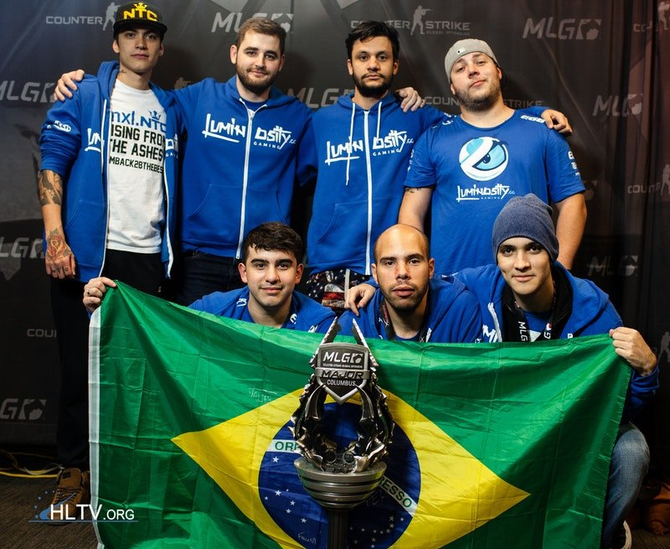
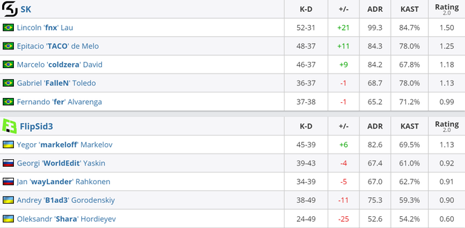
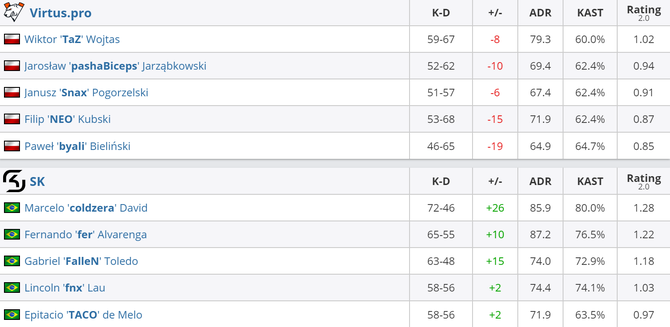
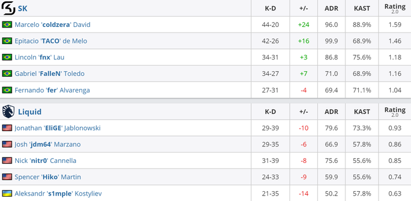

História
Em 2016, no Counter-Strike: Global Offensive. Sk gaming foi responsável pelo título mundial, até hoje lembrada como uma das melhores da história e, sem dúvida, a melhor do Brasil.
A ESL One Cologne 2016 aconteceu entre 5 e 10 de julho, com uma premiação de US$ 1 milhão.
Em abril daquele ano, apenas três meses antes, a mesma line-up formada por FalleN, fer, coldzera, fnx, TACO e zews (treinador) havia conquistado o MLG Major Columbus 2016. Não era novidade pra ninguém que os brasileiros chegavam na Alemanha com o status de favoritos, apesar do fato de que no Major tudo pode acontecer.
Segundo Major
A caminhada da SK Gaming começou no Grupo D, já com duas vitórias importantes. A primeira sobre a G2 de ScreaM, shox e companhia por 16 a 11, na Cobblestone, após um lado terrorista praticamente imparável. Já a segunda foi sobre a FaZe Clan, que vinha de vitória diante da Fnatic, também na Cobble, por 16 a 6.
As duas vitórias seguidas deram aos brasileiros uma vaga direta nas quartas de final, além de dois dias de descanso enquanto o restante da fase de grupos acontecia.
No início dos playoffs, a SK encarou a FlipSid3 Tactics, que conquistou a vaga depois de desbancar a Ninjas in Pyjamas. Na primeira partida disputada, vitória fácil do Brasil na Mirage, por 16 a 7. Já no segundo, ao contrário do primeiro, foi com emoção, terminando apenas na prorrogação, em 19 a 17 para SK. Na ocasião, fnx deu um show e desequilibrou o confronto a favor do Brasil.
Pelas semifinais o adversário foi a Virtus.Pro, que na época sempre estava pronta para travar grandes batalhas contra os brasileiros - e naquela vez não foi diferente. Logo no primeiro jogo (Cobble) veio o susto, primeiramente com empate de 15 a 15, prorrogação e, em seguida, vitória dos poloneses. Mas a Nuke chegou em seguida para acalmar o coração verde e amarelo em um atropelo de 16 a 5. Tudo foi resolvido na Mirage, praticamente uma segunda casa do Brasil na época e, não poderia ser diferente… Apesar do nervosismo da derrota parcial de 9 a 6 no primeiro half, a SK virou com tudo e cravou 16 a 12 no placar, além do 2 a 1 na série. Quem brilhou na semi foi o astro coldzera.
Curiosamente, após os sustos sofridos, a grande final foi apenas uma mera formalidade. A SK Gaming espalhou a doença do pássaro sobre a Liquid e venceu os norte-americanos por 2 a 0, com triunfos de 16 a 7 na train e 16 a 6 na Cobblestone. Olhando para todas as estatísticas, era impressionante como estavam todos positivos em praticamente todos os duelos.
O legado das lendas, cinco anos depois…
Desde 10 de julho de 2016, o Brasil nunca mais venceu um Major. Nossa melhor chance foi com a Immortals, no PGL Major Kraków 2017, quando outros cinco brasileiros chegaram na grande final. A decisão, no entanto, foi cruel e acabou a favor da Gambit, que venceu de virada, por 2 a 1, após sofrer uma derrota de 16 a 4 no primeiro duelo.
Exatos cinco anos depois daquele dia histórico, a torcida brasileira ainda lembra com grande carinho dos ótimos momentos daquela line-up, que foi a que mais nos deu alegria. O Brasil ainda conta com grandes jogadores que podem fazer bonito no futuro, mas FalleN, fer, coldzera, fnx, TACO e zews ficaram eternizados na história. Não à toa, muitos sonham até hoje com um possível "The Last Dance"... Quem sabe?!
Os brasileiros bicampeões de Major ainda seguem no CS:GO atualmente. Porém, em momentos completamente distintos. Os que realmente estão na ativa são FalleN na Liquid e TACO na GODSENT. Fnx é uma espécie de streamer e sexto jogador na Paquetá, enquanto cold, fer e zews estão sem clube atualmente, mas a procura de um.
No momento, a FURIA é o time que mostra mais força entre todos os brasileiros. Porém, em 2021 nasceram outras esperanças para o futuro, mas que ainda estão em estágio embrionário e longe de serem candidatas a título de Major. É fato que tudo pode acontecer, mas provavelmente o brasileirinho terá que esperar um pouco mais até ter outra alegria gigantesca como aquela.